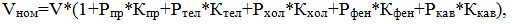
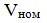
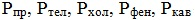
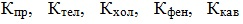

Практична робота 2.1
Створіть електронну таблицю для обчислення вартості проживання в готельному номері за добу та за визначений користувачем термін, якщо наявність побутової техніки в номері збільшує його вартість на певний відсоток (табл. 2.3). кількість побутової техніки в номері становить: 1 праска на особу; 1 телевізор на особу (напівлюкс і люкс); 1 телевізор на у стандартному номері на дві особи; 1 холодильник (напівлюкс і люкс); 1 фен на особу (напівлюкс і люкс); 1 кавоварка.

Таблиця 2.3. Вихідні дані для обчислення вартості готельного номера
Хід виконання
- Створіть таблицю для обчислення вартості готельного номера залежно від наявності побутової техніки за добу та за задану кількість діб (рис. 2.15). Збережіть таблицю у файлі з іменем Практ_2_1.xlsx.
- Для діапазону B3:F3 встановіть числовий формат Відсотковий, скориставшись кнопкою
 (Відсотковий формат) групи Число вкладки Основне.
(Відсотковий формат) групи Число вкладки Основне. - Уведіть у клітинки B3:F3 відповідні дані з табл. 2.3.
- Для діапазону G7:I12 встановіть числовий формат Грошовий, скориставшись вікном Формат клітинок або кнопкою
 (Грошовий формат) групи Число вкладки Основне, та задайте кількість десяткових розрядів, рівну нулю.
(Грошовий формат) групи Число вкладки Основне, та задайте кількість десяткових розрядів, рівну нулю. - До клітинки I3 введіть кількість діб, наприклад 11.
- У діапазон G7:G12 уведіть добову вартість номерів без побутової техніки: 100, 150, 200, 250, 300, 350.
- У діапазон B7:F12 уведіть дані про кількість побутової техніки в номері згідно з умовою задачі.
- До клітинки Н7 самостійно введіть формулу для обчислення вартості стандартного номера на особу за добу, якщо у номері є побутова техніка:  де  – вартість стандартного номера на особу без техніки;  – відсотки підвищення вартості номера за наявності праски, телевізора, холодильника, фена та кавоварки відповідно;  – кількість у номері прасок, телевізорів, холодильників, фенів та кавоварок відповідно. Зауважте, що посилання на клітинки, де містяться відсотки, на які підвищується вартість номера, мають бути абсолютними.
- Скопіюйте формулу з клітинки Н7 у діапазон Н8:Н12.
- До клітинки І7 уведіть формулу для обчислення вартості номера за задану кількість діб: =Н7*$І$3.
- Скопіюйте формулу з клітинки І7 у діапазон клітинок І8:І12.
- Відформатуйте таблицю згідно рис. 2.16. Збережіть файл.

Рис. 2.15. Форма для обчислення вартості готельного номера за день і задану кількість днів

Рис. 2.16. Таблиця з інформацією про вартість готельних номерів з урахуванням наявної в них побутової техніки